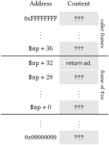

Let us assume that the variable x contains a pointer to a character and y an integer. This program is meaningless in this case, since C does not define the division of a pointer by a number. We call this kind of programming error a type error, as an operator is applied to values for whose type it is not defined. In typed languages like C, type errors are recognized statically (i.e. at compile time) during type checking. The type system allows the compiler to reject meaningless programs.
There are however meaningless programs that the compiler cannot reject. Assume for the same program that x and y are both integers, but y contains the value \(0\text{.}\) The program is well-typed as integer division is defined in C. However, it is unclear what the execution should do in case of a division by \(0\text{.}\)
There are essentially two solutions to this problem: The language could define a behavior for such exceptional situations, for example executing error-handling code. This way is pursued among others in Java, C#, ML in the form of throwing exceptions. The program then has a defined behavior for exceptional situations. However, this strategy requires that every operation that could potentially cause an exceptional situation is checked at run time for such a situation. This can slow down program execution significantly. We call a language type safe if every well-typed program cannot get “stuck”, i.e. every input leads to an execution that is defined by the language. Robin Milner coined the following definition of type safety:
“Well-typed programs cannot go wrong.”
The other approach is to not define a behavior for exceptional situations. This is the way of C. If no behavior is defined for exceptional situations, the implementation does not need to check at run time whether one occurred. Therefore, C makes it potentially easier, in contrast to type-safe languages, to make programs run faster. However, the programmer has no guarantee what the execution does when an exceptional situation occurs. This can lead to severe errors that are very hard to identify. Annex J.2 of the C Standard [1] documents all situations where the behavior is undefined. Among many others, these include: Overflows of signed integer arithmetic, division by \(0\text{,}\) forming out-of-bounds pointers, and accessing addresses that do not point to a container.
Let us deepen our understanding further by discussing an example of undefined behavior that violates memory safety, which means that it tries to access an address that does not point to any container. To this end, consider the following program:
The program has defined behavior for \(0 \leq n \lt 20\text{.}\) For all \(n\ge 20\text{,}\) the behavior of the program is undefined, since the address resulting from *(x + n) does not point to the container (C99 Standard, Page 492):
“The behavior is undefined in the following circumstances: [...] Addition or subtraction of a pointer into, or just beyond, an array object and an integer type produces a result that points just beyond the array object and is used as the operand of a unary * operator that is evaluated (6.5.6).”
That does not necessarily mean that the execution crashes or terminates with an error. It is just not defined what happens. Every assumption on an execution with undefined behavior is false. It is very well possible that the execution proceeds and produces the expected result. This makes it hard to find programming errors like the one in the broken function.
So why do we even bother with undefined behavior? Let us think about what the C compiler needs to do to translate broken into a machine language. If the behavior of an access with \(n\ge 20\) should be defined, this condition needs to be checked. Therefore, the compiler needs to either prove (through static analysis of the code) that \(n\lt 20\) holds for all possible inputs of the program. This is a difficult problem that, compilers generally cannot solve completely in practice. Otherwise, the compiler needs to emit code that checks the condition at the program's run time:
The first two instructions only serve to recognize and handle the exceptional situation that the offset is outside of x. If such tests are, e.g., in the body of deeply nested loops, they can have a severe impact on the program's performance.
C's philosophy is to not enforce these checks, but rather give the responsibility to avoid undefined behavior to the programmer. In case the program that calls broken is correct, the test is unnecessary and wasting execution time can be avoided. Since the behavior in case \(n\ge 20\) holds is undefined, the compiler can simply ignore this case: The emitted code only needs to be correct if \(0 \leq n \lt 20\text{.}\) The compiler can therefore emit code without the check:
Subsection4.15.1Unspecified and Implementation-Defined Behavior
The C Standard clearly distinguishes between undefined, unspecified, and implementation-defined behavior.
Implementation-defined behavior represents non-determinism: There are multiple, clearly defined possibilities how the program may behave. The programmer can rely on the fact that it will follow one of these possibilities, but cannot assume which one. We have seen an example of unspecified behavior in Subsection 4.8.3: C does not (fully) specify the order in which the sub-expressions of an expression are evaluated. If the sub-expressions have side effects that do not intermingle, the program may have different behaviors. Annex J.1 of the C Standard documents the unspecified behavior.
Implementation-defined behavior refers to unspecified behavior where the compiler always selects a specific possibility. This choice is consistent for all programs that are translated with this compiler. Examples for implementation-defined properties are the maximal length of an identifier, the number-representation for signed integers (two's complement, one's complement, etc.), the size of the integer types, etc.. Annex J.3 of the C Standard documents the cases of implementation-defined behavior.
Subsection4.15.2Security Problems
Negligence with undefined behavior can lead to errors that not only crash programs, but present severe security vulnerabilities. The classic example for this is the buffer overflow. Assume an attacker has the binary code produced by a compiler for a C program.
They can now exploit unchecked stores into arrays (usually character strings) to manipulate the contents of the run-time stack. This way, they can change the program's control flow and ultimately inject malicious code into a program.
Consider the following example program:
void foo(char const *msg) {
char nice_msg[32];
sprintf(nice_msg, "The message is: \"%s\"", msg);
...
}
The sprintf function is similar to fprintf, but it does not write the formatted string to a file or output, but rather into an array that is provided as the first parameter. The behavior is undefined if the array is not large enough to hold the entire resulting string.
Let us assume that the compiler emits the following MIPS code for foo:
addiu $sp $sp -36
sw $ra 32($sp)
# Code loading the address of
# "The messa ..." to $a1
move $a2 $a0
move $a0 $sp
jal sprintf
...
lw $ra 32($sp)
addiu $sp $sp 36
jr $ra
The local variables of the C program are stored on the stack of the MIPS machine. For simplicity, we further assume that foo is called with an argument that is received via the network or read from mass storage, as it is common in practice.
The problematic part of foo is that it writes the provided string to a buffer with a fixed size (here 32) without checking whether the buffer overflows. What if "The message is: " concatenated with msg has more than 31 characters? Since sprintf only has the address of the destination array, the function does not know the array's size and can therefore not check against it. Therefore, it will potentially write to addresses behind the destination array in the machine's sequential memory. This destroys the consistency of the run-time stack and allows the attacker to overwrite the return address that has been saved on the stack by foo.

Figure4.15.1.Memory excerpt of the run-time stack when calling foo
Assume the attacker knows the value of the stack pointer at the call. Then, they can fabricate a character string that inserts (almost) arbitrary code into the program. This code is part of the character string (as bytes of the binary encoded machine instructions). The attacker just needs to overwrite the return address with an address further up on the stack, where the first instruction to be executed is stored when the string is written to the stack.
When calling foo with a string of more than 15 characters, the behavior is undefined. Therefore, the compiler can ignore this exceptional situation and just emits machine code that implements the defined behavior. The machine code emitted by the compiler shown here has a behavior, but not the C program. The attacker in this example exploits this fact.
Such attacks depend on the way the program is compiled. In our example, the attacker needs to know the value of the stack pointer when foo is entered exactly to forge a fitting return address. Studying the program's binary code in detail is essential for this kind of attack.
By now, simple buffer overflow attacks can be mitigated by prohibiting that the compiler executes code that resides on the stack. Modern compilers can also sacrifice some execution speed to recognize overwritten return addresses. Attackers however continue to find ways to circumvent these mitigations. For example, the former mitigation can be avoided with so-called return-oriented programming 9 , which does not inject new code to the stack, but misuses existing code snippets from the program itself for its malicious code. To this day, there is little effective protection from such attacks that does not affect the program's execution speed severely.
Subsection4.15.3Undefined Behavior and the Compiler
Modern compilers use undefined behavior to optimize programs. As C only gives meaning to executions without exceptional situations, the compiler only needs to generate code that is correct for such executions. Conversely, the compiler can gain information for optimization opportunities from operations that can have undefined behavior.
The program's behavior is only defined if \(z \ne 0\text{.}\) If \(z = 0\text{,}\) its behavior is undefined because of a division by zero. The compiler can therefore assume that \(z\ne 0\) and use this information to optimize the program.
According to the C semantics, it is therefore allowed for the compiler to eliminate the if-statement and to transform the program as follows:
It is common that such an optimization is misunderstood by programmers as “compiler bug”. This misunderstanding has already lead to many errors in widely-used software systems, as we will see in the following.
Subsection4.15.4Practical Examples
The following examples are taken from an article by Wang et al. [2]. More examples can be found there.
Example4.15.3.Shifts.
Let us consider a code fragment from the implementation of the ext4 file system in the Linux kernel:
According to page 493 of the C99 Standard, the behavior of shifts is undefined in certain situations:
“The behavior is undefined in the following circumstances: [...] An expression is shifted by a negative number or by an amount greater than or equal to the width of the promoted expression (6.5.7)”
Assume that sizeof(int) == 4. If the value of s is greater than or equal to 32, the programs behavior is undefined.
The C Standard leaves the behavior of such shifts undefined because different processors implement them differently. In the 32-bit versions of MIPS and the widely used x86 architecture, only the lowest 5 bit of the shift amount are taken into account. A shift by 32 there is equivalent to a shift by 0. On a PowerPC processor, the lowest 6 bit of the shift amount are considered. There, a left shift by 32 results in the value 0. Both implementations are justified. None is “wrong”.
If C defined one of these meanings, or even a third one, for shifts, the implementations on every processor would need to respect this. For processors that implement shifts differently, this requires additional code. This is to be avoided according to C's philosophy, therefore the behavior is undefined to enable more efficient implementations for the defined behavior.
The above-mentioned bug report also noted that the code crashed on a PowerPC since groups_per_flex had the value 0, leading to a division by zero that caused an exception in the PowerPC processor. A programmer attempted to fix this error by testing the variable for 0 after the shift:
...
groups_per_flex = 1 << s;
/* There are some situations, after shift the
value of 'groups_per_flex' can become zero
and division with 0 will result in fixpoint
divide exception */
if (groups_per_flex == 0)
return 1;
flex_group_count = ... / groups_per_flex;
This correction is wrong, since it does not eliminate the undefined behavior. The C compiler that is used to compile the Linux kernel therefore promptly “optimized the fix away”. That is correct, since the program's behavior is undefined when s is greater than or equal to the number of bits in an int. In the defined case, the content of groups_per_flex is never 0, thus the if-statement's condition is always false and it can be removed.
A correct fix would be:
if (s < 0 || s >= CHAR_BIT * sizeof(int))
return 1;
groups_per_flex = 1 << s;
flex_group_count = ... / groups_per_flex;
The following code also originates from the Linux kernel. The type loff_t is a signed integer type.
int do_fallocate(..., loff_t offset, loff_t len)
{
struct inode *inode = ...;
if (offset < 0 || len <= 0)
return -EINVAL;
/* Check for wrap through zero too */
if ((offset + len > inode->i_sb->s_maxbytes)
|| (offset + len < 0))
return -EFBIG;
...
The code first ensures that both variables, offset and len are not negative. The condition offset + len < 0 attempts to check whether the addition causes an overflow. However, C does not define the behavior of overflowing signed integer arithmetic. From the first if-statement, the compiler concludes that offset and len are not negative at the second if. Adding to non-negative integers either causes undefined behavior (if an overflow occurs), or results in a positive number. The compiler therefore optimizes the second if-statment as follows:
...
if (offset + len > inode->i_sb->s_maxbytes)
return -EFBIG;
...
A correct test for the overflow could look as follows:
int do_fallocate(..., loff_t offset, loff_t len)
{
struct inode *inode = ...;
if (offset < 0 || len <= 0)
return -EINVAL;
/* Check for wrap through zero too */
if ((LOFF_T_MAX - offset < len)
|| (offset + len > inode->i_sb->s_maxbytes)
return -EFBIG;
...
Here, LOFF_T_MAX needs to be the largest value contained in loff_t. Ideally, one writes a function for this check to make the code more readable and to concentrate potential errors to one place:
int loff_overflows(loff_t offset, loff_t len)
{
assert(offset >= 0);
assert(len > 0);
return LOFF_T_MAX - offset < len;
}
int do_fallocate(..., loff_t offset, loff_t len)
{
struct inode *inode = ...;
if (offset < 0 || len <= 0)
return -EINVAL;
/* Check for wrap through zero too */
if (loff_overflows(offset, len)
|| (offset + len > inode->i_sb->s_maxbytes)
return -EFBIG;
...